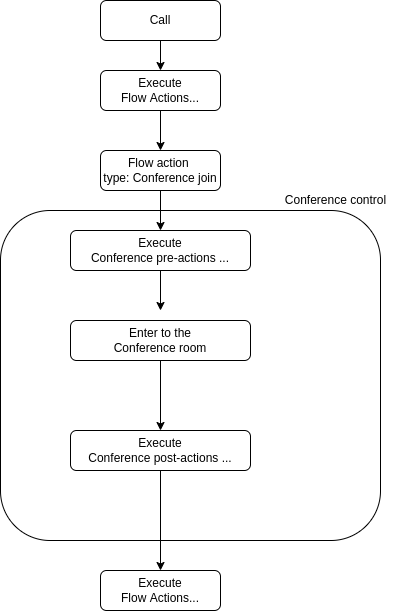

Overview¶
Note
AI Context
Complexity: Medium-High
Cost: Chargeable (credit deduction per conference minute per participant)
Async: Yes.
POST https://api.voipbin.net/v1.0/conferencesreturns immediately with statusstarting. PollGET https://api.voipbin.net/v1.0/conferences/{id}or subscribe via WebSocket to track conference status changes.
The Conference API is a powerful low-level API that empowers developers to create conference rooms capable of accommodating various forms of communication, including voice, video, and chat. At its core, the API revolves around the concept of conferences, which act as containers for communications exchanged between two or more users. These communications may represent single interactions or a complete history of all interactions between the participants.
Additionally, the Conference API allows developers to establish voice, video, and WebRTC (Web Real-Time Communication) calls, enabling seamless voice and video communication between two users. These calls can be stored within the conferences, ensuring that all relevant communications are organized and easily accessible.

By leveraging the Conference API, developers can build robust communication applications with the capability to host multi-user conferences and support various communication modes. The API’s flexibility and functionality provide a foundation for creating feature-rich and scalable communication solutions to meet diverse user needs. Whether for collaboration, remote meetings, customer support, or any other scenario requiring real-time communication, the Conference API offers a reliable and efficient means to establish and manage communication sessions between multiple users.
How Conferences Work¶
A conference is a virtual room where multiple participants can communicate. Understanding the architecture helps you build reliable applications.
Conference Architecture
+-------------------------------------------------------------------------+
| Conference Architecture |
+-------------------------------------------------------------------------+
Application Layer Infrastructure Layer
+-------------------------+ +-------------------------+
| Conference | | Confbridge |
| (conference-manager) | | (call-manager) |
| | | |
| • Participant list |--------------| • Audio mixing |
| • Recording control | manages | • Voice bridge |
| • Transcription | | • Join/leave events |
| • Metadata & state | | • Media streams |
+-------------------------+ +-------------------------+
| |
| |
v v
+-------------------------------------------------------------------------+
| Participants (Calls) |
| |
| +----------+ +----------+ +----------+ +----------+ |
| | Call A | | Call B | | Call C | | Call D | |
| | (phone) | | (WebRTC) | | (SIP) | | (phone) | |
| +----------+ +----------+ +----------+ +----------+ |
| |
| All audio mixed together |
+-------------------------------------------------------------------------+
Key Concepts
Conference: High-level container that manages participants, recording, and transcription
Confbridge: Low-level audio bridge that actually mixes the audio
Conferencecall: A participant in the conference (links a call to a conference)
Conference Lifecycle¶
Every conference moves through a predictable set of states.
State Diagram
+-------------------------------------------------------------------------+
| Conference State Machine |
+-------------------------------------------------------------------------+
POST /conferences
|
v
+------------+
| starting | (brief initialization)
+-----+------+
|
v
+------------+
|progressing |<--------------------------------+
| (active) | |
+-----+------+ |
| |
| DELETE or timeout |
v |
+------------+ still has |
|terminating |------participants --------------+
| (closing) |
+-----+------+
|
| all participants left
v
+------------+
| terminated |
| (closed) |
+------------+
State Descriptions
Status |
What’s happening |
|---|---|
starting |
Conference is being initialized. Brief transitional state. |
progressing |
Conference is active. Participants can join, recording can start. |
terminating |
Conference is closing. No new participants. Waiting for everyone to leave. |
terminated |
Conference is completely closed. No further operations possible. |
Participant Lifecycle¶
Each participant (conferencecall) has their own lifecycle independent of the conference.
Participant States
+-------------------------------------------------------------------------+
| Participant (Conferencecall) States |
+-------------------------------------------------------------------------+
Flow triggers join
|
v
+------------+
| joining | (pre-flow executing, connecting to bridge)
+-----+------+
|
| audio connected
v
+------------+
| joined | (actively in conference, can hear/speak)
+-----+------+
|
| hangup or kicked
v
+------------+
| leaving | (being removed from bridge)
+-----+------+
|
| fully disconnected
v
+------------+
| leaved | (no longer in conference)
+------------+
Status |
What’s happening |
|---|---|
joining |
Participant is connecting. Pre-conference flow may be executing. |
joined |
Participant is active. Audio is flowing. Can hear and speak. |
leaving |
Participant is being disconnected from the conference. |
leaved |
Participant has fully left. No longer part of the conference. |
Joining a Conference¶
When a participant joins a conference, a coordinated sequence occurs.
Join Sequence
+-------------------------------------------------------------------------+
| Participant Join Sequence |
+-------------------------------------------------------------------------+
Flow Conference-Manager Call-Manager
| | |
| conference_join action | |
|--------------------------->| |
| | |
| | Create conferencecall |
| | status: joining |
| | |
| | Pre-flow? Execute it |
| | |
| | Push confbridge_join |
| |---------------------------->|
| | |
| | | Connect call
| | | to audio bridge
| | |
| | confbridge_joined event |
| |<----------------------------|
| | |
| | Update conferencecall |
| | status: joined |
| | |
| | Add to participant list |
| | |
|<---------------------------| |
| Continue flow | |
What Happens at Each Step
Flow Action: Your flow executes a
conference_joinactionConferencecall Created: A participant record is created with status “joining”
Pre-Flow (Optional): If configured, a welcome flow plays (greeting, instructions)
Audio Connected: The call’s audio is routed to the conference bridge
Joined: Participant can now hear and be heard by others in the conference
Leaving a Conference¶
Participants can leave naturally (hangup) or be removed via API.
Natural Leave (Call Ends)
+-------------------------------------------------------------------------+
| Natural Leave (Participant Hangup) |
+-------------------------------------------------------------------------+
Participant Call-Manager Conference-Manager
| | |
| Hangs up phone | |
|------------------------>| |
| | |
| | Detects leave from bridge |
| | |
| | confbridge_leaved event |
| |--------------------------->|
| | |
| | | Update status
| | | to "leaved"
| | |
| | | Remove from
| | | participant list
| | |
Forced Removal (API)
DELETE https://api.voipbin.net/v1.0/conferencecalls/{participant-id}
|
v
+----------------------------------------+
| 1. Validate participant is in |
| "joining" or "joined" status |
| |
| 2. Update status to "leaving" |
| |
| 3. Send kick request to confbridge |
| |
| 4. Confbridge removes participant |
| |
| 5. confbridge_leaved event fires |
| |
| 6. Update status to "leaved" |
+----------------------------------------+
Conference Types¶
VoIPBIN supports different conference types for different use cases.
Type: Conference (Standard)
+-------------------------------------------------------------------------+
| Type: Conference (Multi-Party) |
+-------------------------------------------------------------------------+
+-------------------------------------------------------------------------+
| Conference Room |
| |
| +------+ +------+ +------+ +------+ +------+ |
| |User A| |User B| |User C| |User D| |User E| |
| +------+ +------+ +------+ +------+ +------+ |
| |
| • Supports 2+ participants |
| • Remains active even with 0 or 1 participant |
| • Only terminates when explicitly deleted |
| • Recording captures all participants |
| |
+-------------------------------------------------------------------------+
Note
AI Implementation Hint
The type field is immutable after creation. Choose conference for multi-party rooms (2+ participants, stays active until explicitly deleted) or connect for 1:1 bridges (auto-terminates when either party leaves). If unsure, default to conference since it handles both single and multi-party scenarios.
Type: Connect (1:1 Bridge)
+-------------------------------------------------------------------------+
| Type: Connect (Two-Party) |
+-------------------------------------------------------------------------+
+-------------------------------------------------------------------------+
| Connect Bridge |
| |
| +------------+ +------------+ |
| | Caller |<------------>| Agent | |
| +------------+ +------------+ |
| |
| • Designed for exactly 2 participants |
| • Auto-ejects remaining participant when one leaves |
| • Useful for customer-agent calls |
| • Conference terminates when empty |
| |
+-------------------------------------------------------------------------+
When one participant leaves:
+----------+ +----------+
| Caller | | Agent |
| leaves |---------->| AUTO-KICK|
+----------+ +----------+
|
v
Conference terminates
Recording¶
Conferences support recording all participant audio into a single file.
Starting a Recording
POST https://api.voipbin.net/v1.0/conferences/{id}/recording_start
+-------------------------------------------------------------------------+
| Recording Active |
+-------------------------------------------------------------------------+
Conference
+-------------------------------------------------------------------------+
| |
| +------+ +------+ +------+ |
| |User A| |User B| |User C| |
| +--+---+ +--+---+ +--+---+ |
| | | | |
| +-----------+-----------+ |
| | |
| v |
| +-------------+ |
| | Recording | |
| | File | |
| +-------------+ |
| |
| recording_id: "abc-123" (current active recording) |
| recording_ids: ["abc-123", ...] (all recordings history) |
| |
+-------------------------------------------------------------------------+
Note
AI Implementation Hint
Recording and transcription can only start when the conference status is progressing. If you attempt POST https://api.voipbin.net/v1.0/conferences/{id}/recording_start on a conference in starting or terminating status, the request will fail. Always poll GET https://api.voipbin.net/v1.0/conferences/{id} and verify status is progressing before starting recording or transcription.
Recording Rules
Only one active recording per conference at a time
Recording can only start when conference is in “progressing” status
All participant audio is mixed into a single recording
Maximum duration: 24 hours
Recording history is preserved in
recording_idsarray
Stopping a Recording
POST https://api.voipbin.net/v1.0/conferences/{id}/recording_stop
• Stops active recording
• Clears recording_id field
• Recording file becomes available for download
Transcription¶
Real-time transcription converts conference audio to text.
Starting Transcription
POST https://api.voipbin.net/v1.0/conferences/{id}/transcribe_start
+-------------------------------------------------------------------------+
| Transcription Active |
+-------------------------------------------------------------------------+
Conference Audio Transcription Service
+---------------------+ +---------------------+
| User A: "Hello" | | |
| User B: "Hi there" |--------------------->| Speech-to-Text |
| User C: "Welcome" | audio stream | |
+---------------------+ +----------+----------+
|
v
+---------------------+
| Transcript Output |
| "Hello. Hi there. |
| Welcome." |
+---------------------+
Transcription Rules
Only one active transcription per conference at a time
Can only start when conference is in “progressing” status
Language must be specified for accurate transcription
History preserved in
transcribe_idsarray
Recording and Transcription Together¶
For complete conference documentation, you can run recording and transcription simultaneously.
Combined Setup
+---------------------------------------------------------------+
| Conference |
| +------+ +------+ +------+ |
| |User A| |User B| |User C| |
| +--+---+ +--+---+ +--+---+ |
| | | | |
| +-----+-----+-----+-----+ |
| | | |
| v v |
| +----------+ +-------------+ |
| |Recording | |Transcription| |
| | File | | Stream | |
| +----------+ +------+------+ |
+---------------------------------------------------------------+
|
v
+-----------+
| Your App |
| (webhook) |
+-----------+
Sequence
1. Create conference
POST https://api.voipbin.net/v1.0/conferences
2. Start recording
POST https://api.voipbin.net/v1.0/conferences/{id}/recording_start
3. Start transcription
POST https://api.voipbin.net/v1.0/conferences/{id}/transcribe_start
{ "language": "en-US" }
4. Participants join and talk
→ Recording captures all audio
→ Transcripts stream to webhook
5. Stop transcription
POST https://api.voipbin.net/v1.0/conferences/{id}/transcribe_stop
6. Stop recording
POST https://api.voipbin.net/v1.0/conferences/{id}/recording_stop
7. Result: Audio file + searchable text transcripts
Use Cases for Combined Recording + Transcription
Use Case |
Benefit |
|---|---|
Compliance |
Full audio archive + searchable text records |
Meeting minutes |
Auto-generated text from recording |
Quality assurance |
Review both audio and transcript |
Legal documentation |
Verifiable audio + readable transcript |
Timeout and Auto-Cleanup¶
Conferences can be configured to automatically terminate after a period.
Timeout Behavior
+-------------------------------------------------------------------------+
| Conference Timeout |
+-------------------------------------------------------------------------+
Conference created Timeout expires
with timeout: 3600 (1 hour) |
| |
v v
-----o--------------------------------------------------o------------->
|<------------- 3600 seconds --------------------->| Time
| |
| Conference is progressing | Auto-terminate
| Participants can join/leave | All participants
| | kicked
Set
timeoutwhen creating the conference (in seconds)When timeout expires, conference moves to “terminating”
All remaining participants are kicked
Conference transitions to “terminated”
Auto-Cleanup When Empty
Conference in "terminating" status
|
v
+------------------------+
| Any participants left? |
+-----------+------------+
|
+--------+--------+
| |
Yes No
| |
v v
Wait for them Conference destroyed
to leave Status: terminated
Health Checks¶
The system continuously monitors participant health.
Health Check Process
+-------------------------------------------------------------------------+
| Participant Health Checks |
+-------------------------------------------------------------------------+
Every 5 seconds, for each participant:
+----------------------------------------+
| 1. Is the participant's call still |
| in "progressing" status? |
| |
| 2. Is the conference still in |
| "progressing" status? |
| |
| 3. Was the participant created less |
| than 24 hours ago? |
+----------------------------------------+
|
+--------+--------+
| |
All Yes Any No
| |
v v
Continue Remove participant
monitoring (after 2 retries)
Common Scenarios¶
Scenario 1: Simple Conference Call
1. Create conference
POST https://api.voipbin.net/v1.0/conferences
→ Conference in "progressing" status
2. Participants join through flow
+----------+ +----------+ +----------+
| User A | | User B | | User C |
| joins | | joins | | joins |
+----------+ +----------+ +----------+
3. All can hear each other
4. Users hang up one by one
5. Delete conference when done
DELETE https://api.voipbin.net/v1.0/conferences/{id}
Scenario 2: Recorded Meeting
1. Create conference
2. Start recording
POST https://api.voipbin.net/v1.0/conferences/{id}/recording_start
3. Participants join and talk
4. Stop recording
POST https://api.voipbin.net/v1.0/conferences/{id}/recording_stop
5. Recording file available for download
Scenario 3: Customer-Agent Connect
1. Create connect-type conference
POST https://api.voipbin.net/v1.0/conferences
{ "type": "connect" }
2. Customer call joins
3. Agent call joins
4. Customer and agent talk
5. When either hangs up:
→ Other is auto-ejected
→ Conference terminates
Events and Webhooks¶
Conference changes trigger events you can subscribe to.
Event Types
+-------------------------------------------------------------------------+
| Conference Events |
+-------------------------------------------------------------------------+
Event When it fires
-------------------------------------------------------------------------
conference_created Conference is created
conference_updated Participant joins/leaves, recording starts/stops
conference_deleted Conference is terminated
Best Practices¶
1. Choose the Right Conference Type
Use Case Type
----------------------------------------------------
Team meeting (3+ people) conference
Customer support call connect
Webinar/broadcast conference
2. Set Appropriate Timeouts
• Short meetings: timeout: 3600 (1 hour)
• Long workshops: timeout: 14400 (4 hours)
• Persistent rooms: timeout: 0 (no timeout)
3. Handle Participant Lifecycle
Subscribe to
conference_updatedevents to track joins/leavesImplement cleanup logic when all participants leave
Consider pre-flows for instructions or greetings
4. Recording Best Practices
Notify participants that recording is active (legal requirement)
Set reasonable duration limits
Download and store recordings promptly